采购退仓＋质量库存 · 详细验收报告
2026-10-25T21:00:08.709452 · 本地TEST仓库 · 新建资料全部保留
后端相关回归297 项通过保留业务场景21 项通过浏览器检查15 项通过查询检查13 项通过 采购退仓列表 质量库存列表 供应链待办
本轮交付与自动流程边界
采购退仓绑定原供应商、原采购及成功入账来源，保留实际SKU、批次、正次品、单位和原成本。审核、取消申请、质量审批及款项凭证登记由操作员通过正常接口明确发起；随后库存锁定、奇门下发、签名回传解析、实际扣账与取消后的释放由后台执行。未手工改写目标状态或库存，也未调用手工出库或扣账接口替代自动流程。
仓库采用本地TEST奇门模拟器，未与外部生产仓库联调。质量转正登记模拟仓库质检凭证后审核执行OMS库存变化；本轮未调用仓库质量变更接口。供应商退款/抵扣为独立凭证登记，未调用银行或平台付款接口。
奇门接口核对
| 操作 | 实际协议 | 核对内容 |
|---|
| 采购退仓下发 | taobao.qimen.stockout.create | CGTH；供应商、货主、仓库、原行、批次、ZP/CC及原采购成本 |
| 原仓单查询 | taobao.qimen.stockout.query | deliveryOrderCode / deliveryOrderId；查询状态不替代实出明细 |
| 实际出库回传 | taobao.qimen.stockout.confirm | 验签、原目标身份、原行批次质量、唯一消息、中间/最终确认及实际物流 |
| 停止剩余退仓 | taobao.qimen.order.cancel | CGTH和原单身份；结果明确后才释放未出库占用 |
接口按奇门官方白皮书5.13、5.14、5.15及5.32节核对。单次明细不完整时不扣账，需补齐后回传。
业务场景索引
库存结果总表
各场景均使用独立新SKU。表中初始库存为采购自动入账后的数量；公司、仓库、实际批次以及库存流水均已逐项核对。质量冻结会进入不可售/冻结，退供锁定显示为已分配；预占在所有场景中均为0。
| 场景 | SKU | 初始正/次 | 公司总量/可用 | 退供占用/不可售冻结 | 仓库正/次 | 仓库可用正/次 | 仓库锁定正/次 | 批次核对 |
|---|
| 1 | PRQ_20261025202546_01 | 10 / 0 | 7 / 7 | 0 / 0 | 7 / 0 | 7 / 0 | 0 / 0 | 一致 |
| 2 | PRQ_20261025202546_02 | 10 / 0 | 10 / 7 | 3 / 0 | 10 / 0 | 7 / 0 | 3 / 0 | 一致 |
| 3 | PRQ_20261025202546_03 | 10 / 0 | 7 / 7 | 0 / 0 | 7 / 0 | 7 / 0 | 0 / 0 | 一致 |
| 4 | PRQ_20261025202546_04 | 10 / 0 | 8 / 5 | 3 / 0 | 8 / 0 | 5 / 0 | 3 / 0 | 一致 |
| 5 | PRQ_20261025202546_05 | 10 / 0 | 5 / 5 | 0 / 0 | 5 / 0 | 5 / 0 | 0 / 0 | 一致 |
| 6 | PRQ_20261025202546_06 | 3 / 2 | 3 / 3 | 0 / 0 | 3 / 0 | 3 / 0 | 0 / 0 | 一致 |
| 7 | PRQ_20261025202546_07 | 3 / 2 | 2 / 1 | 0 / 1 | 1 / 1 | 1 / 1 | 0 / 0 | 一致 |
| 8 | PRQ_20261025202546_08 | 10 / 0 | 7 / 7 | 0 / 0 | 7 / 0 | 7 / 0 | 0 / 0 | 一致 |
| 9 | PRQ_20261025202546_09 | 10 / 0 | 10 / 7 | 3 / 0 | 10 / 0 | 7 / 0 | 3 / 0 | 一致 |
| 10 | PRQ_20261025202546_10 | 10 / 0 | 10 / 7 | 3 / 0 | 10 / 0 | 7 / 0 | 3 / 0 | 一致 |
| 11 | PRQ_20261025202546_11 | 10 / 0 | 10 / 10 | 0 / 0 | 10 / 0 | 10 / 0 | 0 / 0 | 一致 |
| 12 | PRQ_20261025202546_12 | 10 / 0 | 8 / 8 | 0 / 0 | 8 / 0 | 8 / 0 | 0 / 0 | 一致 |
| 13 | PRQ_20261025202546_13 | 10 / 0 | 10 / 3 | 7 / 0 | 10 / 0 | 3 / 0 | 7 / 0 | 一致 |
| 14 | PRQ_20261025202546_14 | 10 / 0 | 10 / 6 | 0 / 4 | 10 / 0 | 6 / 0 | 4 / 0 | 一致 |
| 15 | PRQ_20261025202546_15 | 10 / 0 | 10 / 8 | 0 / 2 | 10 / 0 | 8 / 0 | 2 / 0 | 一致 |
| 16 | PRQ_20261025202546_16 | 3 / 2 | 5 / 5 | 0 / 0 | 5 / 0 | 5 / 0 | 0 / 0 | 一致 |
| 17 | PRQ_20261025202546_17 | 10 / 0 | 10 / 10 | 0 / 0 | 10 / 0 | 10 / 0 | 0 / 0 | 一致 |
| 18 | PRQ_20261025202546_18 | 3 / 2 | 5 / 3 | 0 / 2 | 3 / 2 | 3 / 2 | 0 / 0 | 一致 |
| 19 | PRQ_20261025202546_19 | 10 / 0 | 7 / 7 | 0 / 0 | 7 / 0 | 7 / 0 | 0 / 0 | 一致 |
| 20 | PRQ_20261025202546_20 | 10 / 0 | 10 / 7 | 3 / 0 | 10 / 0 | 7 / 0 | 3 / 0 | 一致 |
| 21 | PRQ_20261025202546_21 | 10 / 0 | 8 / 5 | 3 / 0 | 8 / 0 | 5 / 0 | 3 / 0 | 一致 |
01 虚拟仓退供3件，审核后自动扣账 通过
详细场景：原采购10件经虚拟到货自动入账；创建原批次退供3件并显式审核。
实际验收结果：审核后的锁定、虚拟实出和扣账均自动执行；原采购实收10保留，已退3、净入库7。
打开保留验收单 原采购 POe0e19610c8064d9989a4209a11b2dbc1 原到货批次
| 核对项 | 实际结果 |
|---|
| 原退仓单 | CGTad1ef1004b474b3e8019ba87abe0620b |
| 申请 / 仓库实出 / 已扣账 | 3 / 3 / 3 |
| 实际出库的原采购货值 | ¥7.5 |
| 原采购累计实收 | 原采购仍为10，未覆盖原入库记录 |
| 供应商款项凭证 | UNRECORDED / ¥0.0 |
| 原实际商品 | 正次品 | 原入库与批次 | 原成本 | 申请/实出/扣账 |
|---|
| PRQ_20261025202546_01 | ZP | CG1b65fef855e94e49872d817cb9c9e57a
B3446451cf46c4bf981c2ddfbae6ebf45 | 2.5 | 3 / 3 / 3 件 |
库存实测：公司总库存 7，可用 7，退供占用 0，预占 0，不可售/冻结 0；仓库正品 7、次品 0，与批次汇总一致。
查看真实库存流水证据
RECEIVE CG1b65fef855e94e49872d817cb9c9e57a 10 0 10 0 0
RETURN_HOLD CGTad1ef1004b474b3e8019ba87abe0620b 3 ZP 10 10 0 0
RETURN_OUT CGTad1ef1004b474b3e8019ba87abe0620b -3 ZP 10 7 0 0
02 真实仓已受理，尚未出库保持原锁定 通过
详细场景：原采购10件已入账，退供3件审核后自动下发真实TEST奇门仓库；暂不回传实出。
实际验收结果：仓库已受理不等于已经出库；总库存10、可用7、退供占用3，实际扣账为0。
打开保留验收单 原采购 POc23f3a58b1354e809053b7d57ffa46d9 原到货批次
| 核对项 | 实际结果 |
|---|
| 原退仓单 | CGTc933ec30422d4bd485e9e0ec61703a0f |
| 申请 / 仓库实出 / 已扣账 | 3 / 0 / 0 |
| 实际出库的原采购货值 | ¥0.0 |
| 原采购累计实收 | 原采购仍为10，未覆盖原入库记录 |
| 供应商款项凭证 | UNRECORDED / ¥0.0 |
| 原实际商品 | 正次品 | 原入库与批次 | 原成本 | 申请/实出/扣账 |
|---|
| PRQ_20261025202546_02 | ZP | CG265b4a8428bc4d149cac5ad0312ead61
PRQ_BATCH_accepted | 2.5 | 3 / 0 / 0 件 |
库存实测：公司总库存 10，可用 7，退供占用 3，预占 0，不可售/冻结 0；仓库正品 10、次品 0，与批次汇总一致。
查看真实库存流水证据
RECEIVE WMS_RECEIPT_26 10 0 10 0 0
RETURN_HOLD CGTc933ec30422d4bd485e9e0ec61703a0f 3 ZP 10 10 0 0
03 真实仓退供3件并自动扣账 通过
详细场景：原采购10件，申请退仓3件；自动stockout下发受理后，签名回传原行原批次3件最终出库。
实际验收结果：自动扣账3件，在库7；实际运单来自stockout.confirm，原采购成本2.50元/件可追溯。
打开保留验收单 原采购 POc7fe27af022e4629bb4a4c738dda6d93 原到货批次
| 核对项 | 实际结果 |
|---|
| 原退仓单 | CGT7163abe8b75f4903833e5cdf5b5b6b0c |
| 申请 / 仓库实出 / 已扣账 | 3 / 3 / 3 |
| 实际出库的原采购货值 | ¥7.5 |
| 原采购累计实收 | 原采购仍为10，未覆盖原入库记录 |
| 供应商款项凭证 | UNRECORDED / ¥0.0 |
| 原实际商品 | 正次品 | 原入库与批次 | 原成本 | 申请/实出/扣账 |
|---|
| PRQ_20261025202546_03 | ZP | CG8bcfe321cd5242f5a817dd581ec3b90a
PRQ_BATCH_full | 2.5 | 3 / 3 / 3 件 |
库存实测：公司总库存 7，可用 7，退供占用 0，预占 0，不可售/冻结 0；仓库正品 7、次品 0，与批次汇总一致。
查看真实库存流水证据
RECEIVE WMS_RECEIPT_27 10 0 10 0 0
RETURN_HOLD CGT7163abe8b75f4903833e5cdf5b5b6b0c 3 ZP 10 10 0 0
RETURN_OUT CGT7163abe8b75f4903833e5cdf5b5b6b0c -3 ZP 10 7 0 0
04 申请5件只实出2件，保留剩余3件占用 通过
详细场景：申请退供5件，仓库仅签名回传2件中间状态，暂不发送最终结束消息。
实际验收结果：只扣2件，在库8，其中可用5、原退供剩余占用3；单据继续等待剩余出库。
打开保留验收单 原采购 PO43ee9d65c1b34dc682b03f97ba32c6f2 原到货批次
| 核对项 | 实际结果 |
|---|
| 原退仓单 | CGT64622a2be29947948793e5b64ce2fea6 |
| 申请 / 仓库实出 / 已扣账 | 5 / 2 / 2 |
| 实际出库的原采购货值 | ¥5.0 |
| 原采购累计实收 | 原采购仍为10，未覆盖原入库记录 |
| 供应商款项凭证 | UNRECORDED / ¥0.0 |
| 原实际商品 | 正次品 | 原入库与批次 | 原成本 | 申请/实出/扣账 |
|---|
| PRQ_20261025202546_04 | ZP | CG0cf051e4cafe4433a8d1b741afa30441
PRQ_BATCH_partial | 2.5 | 5 / 2 / 2 件 |
库存实测：公司总库存 8，可用 5，退供占用 3，预占 0，不可售/冻结 0；仓库正品 8、次品 0，与批次汇总一致。
查看真实库存流水证据
RECEIVE WMS_RECEIPT_28 10 0 10 0 0
RETURN_HOLD CGT64622a2be29947948793e5b64ce2fea6 5 ZP 10 10 0 0
RETURN_OUT CGT64622a2be29947948793e5b64ce2fea6 -2 ZP 10 8 0 0
05 5件分两次出库2件加3件 通过
详细场景：申请退仓5件；先回传2件中间出库，再用不同消息回传3件最终出库。
实际验收结果：两个原事件分别入账，共扣5件；库存5，原退供占用全部消耗。
打开保留验收单 原采购 PO184f3c5d622742349955319665543aae 原到货批次
| 核对项 | 实际结果 |
|---|
| 原退仓单 | CGT7cf9cffcae05497ca83185d232bab41b |
| 申请 / 仓库实出 / 已扣账 | 5 / 5 / 5 |
| 实际出库的原采购货值 | ¥12.5 |
| 原采购累计实收 | 原采购仍为10，未覆盖原入库记录 |
| 供应商款项凭证 | UNRECORDED / ¥0.0 |
| 原实际商品 | 正次品 | 原入库与批次 | 原成本 | 申请/实出/扣账 |
|---|
| PRQ_20261025202546_05 | ZP | CG38a79a70edbe44399f4afd85412f2ce9
PRQ_BATCH_split | 2.5 | 5 / 5 / 5 件 |
库存实测：公司总库存 5，可用 5，退供占用 0，预占 0，不可售/冻结 0；仓库正品 5、次品 0，与批次汇总一致。
查看真实库存流水证据
RECEIVE WMS_RECEIPT_29 10 0 10 0 0
RETURN_HOLD CGT7cf9cffcae05497ca83185d232bab41b 5 ZP 10 10 0 0
RETURN_OUT CGT7cf9cffcae05497ca83185d232bab41b -2 ZP 10 8 0 0
RETURN_OUT CGT7cf9cffcae05497ca83185d232bab41b -3 ZP 8 5 0 0
06 采购实收正品3次品2，次品2件全部退供 通过
详细场景：采购实收正品3、次品2，次品按采购质量标记计入不可售；只申请次品2件退供。
实际验收结果：下发及回传使用CC次品，库存只扣次品2；最终正品3、次品0，公司可用3。
打开保留验收单 原采购 POb9a0f9c4c8c142e4a5640fc1aa7020ae 原到货批次
| 核对项 | 实际结果 |
|---|
| 原退仓单 | CGT5e138158526f4e4aa460ef48d1b6051f |
| 申请 / 仓库实出 / 已扣账 | 2 / 2 / 2 |
| 实际出库的原采购货值 | ¥5.0 |
| 原采购累计实收 | 原采购仍为5，未覆盖原入库记录 |
| 供应商款项凭证 | UNRECORDED / ¥0.0 |
| 原实际商品 | 正次品 | 原入库与批次 | 原成本 | 申请/实出/扣账 |
|---|
| PRQ_20261025202546_06 | CP | CGb7f1ad68ac424e218a5905b046d2aa2f
PRQ_BATCH_bad | 2.5 | 2 / 2 / 2 件 |
库存实测：公司总库存 3，可用 3，退供占用 0，预占 0，不可售/冻结 0；仓库正品 3、次品 0，与批次汇总一致。
查看真实库存流水证据
RECEIVE WMS_RECEIPT_30 3 0 3 0 0
RECEIVE WMS_RECEIPT_31 2 3 3 0 2
RETURN_HOLD CGT5e138158526f4e4aa460ef48d1b6051f 2 CP 3 3 2 2
RETURN_OUT CGT5e138158526f4e4aa460ef48d1b6051f -2 CP 3 3 2 0
07 同一退仓单包含正品2件及次品1件 通过
详细场景：同一SKU同一实际批次，原实收正品3、次品2；同一退仓单申请正品2和次品1，并在同一消息确认出库。
实际验收结果：正次品按各自原行和原来源扣账；最终正品1、次品1，总量2、可用1、不可售1。
打开保留验收单 原采购 PO16f829631576406e86254df8669d3f72 原到货批次
| 核对项 | 实际结果 |
|---|
| 原退仓单 | CGTefaab2865fbd440d864f7d219e5b857a |
| 申请 / 仓库实出 / 已扣账 | 3 / 3 / 3 |
| 实际出库的原采购货值 | ¥7.5 |
| 原采购累计实收 | 原采购仍为5，未覆盖原入库记录 |
| 供应商款项凭证 | UNRECORDED / ¥0.0 |
| 原实际商品 | 正次品 | 原入库与批次 | 原成本 | 申请/实出/扣账 |
|---|
| PRQ_20261025202546_07 | ZP | CG624439a3d63d4e2f833de58354c31452
PRQ_BATCH_mixed | 2.5 | 2 / 2 / 2 件 |
| PRQ_20261025202546_07 | CP | CG624439a3d63d4e2f833de58354c31452
PRQ_BATCH_mixed | 2.5 | 1 / 1 / 1 件 |
发现并修复：同SKU同批次正次品扣账流水幂等键冲突，事务已整体回滚。幂等键包含退仓单、原业务行、正次品与动作；重放原回传自动重试原失败事件。当前原事件已完成扣账，未重建退仓单或改写库存。
库存实测：公司总库存 2，可用 1，退供占用 0，预占 0，不可售/冻结 1；仓库正品 1、次品 1，与批次汇总一致。
查看真实库存流水证据
RECEIVE WMS_RECEIPT_32 3 0 3 0 0
RECEIVE WMS_RECEIPT_33 2 3 3 0 2
RETURN_HOLD CGTefaab2865fbd440d864f7d219e5b857a 2 ZP 3 3 2 2
RETURN_HOLD CGTefaab2865fbd440d864f7d219e5b857a 1 CP 3 3 2 2
RETURN_OUT CGTefaab2865fbd440d864f7d219e5b857a -2 ZP 3 1 2 2
RETURN_OUT CGTefaab2865fbd440d864f7d219e5b857a -1 CP 1 1 2 1
08 同一出库消息重复回传不重复扣账 通过
详细场景：申请退仓3件，仓库同一消息、同一内容签名回传两次。
实际验收结果：最终仍只扣3件，事件与库存流水保持原身份，没有重复扣账。
打开保留验收单 原采购 PO058f9b90a5214c02a711d39465e3e5a3 原到货批次
| 核对项 | 实际结果 |
|---|
| 原退仓单 | CGT2b7abe3a339a4aecac7b7ba319336031 |
| 申请 / 仓库实出 / 已扣账 | 3 / 3 / 3 |
| 实际出库的原采购货值 | ¥7.5 |
| 原采购累计实收 | 原采购仍为10，未覆盖原入库记录 |
| 供应商款项凭证 | UNRECORDED / ¥0.0 |
| 原实际商品 | 正次品 | 原入库与批次 | 原成本 | 申请/实出/扣账 |
|---|
| PRQ_20261025202546_08 | ZP | CG4b21cce23f3944d28a2bbc5d61ad40a7
PRQ_BATCH_replay | 2.5 | 3 / 3 / 3 件 |
库存实测：公司总库存 7，可用 7，退供占用 0，预占 0，不可售/冻结 0；仓库正品 7、次品 0，与批次汇总一致。
查看真实库存流水证据
RECEIVE WMS_RECEIPT_34 10 0 10 0 0
RETURN_HOLD CGT2b7abe3a339a4aecac7b7ba319336031 3 ZP 10 10 0 0
RETURN_OUT CGT2b7abe3a339a4aecac7b7ba319336031 -3 ZP 10 7 0 0
09 申请3件却回传4件，保留待核对且不扣账 通过
详细场景：申请退仓3件，真实TEST仓库却签名回传原行4件。
实际验收结果：拒绝超量确认，实际出库及库存扣账均保持0；原3件占用保留，明确提示仓库回传待更正。
打开保留验收单 原采购 POfcac439eda9247628dca6c609b0e99c2 原到货批次
| 核对项 | 实际结果 |
|---|
| 原退仓单 | CGT14d74af2b84c4e4da32243105ce51b7e |
| 申请 / 仓库实出 / 已扣账 | 3 / 0 / 0 |
| 实际出库的原采购货值 | ¥0.0 |
| 原采购累计实收 | 原采购仍为10，未覆盖原入库记录 |
| 供应商款项凭证 | UNRECORDED / ¥0.0 |
| 原实际商品 | 正次品 | 原入库与批次 | 原成本 | 申请/实出/扣账 |
|---|
| PRQ_20261025202546_09 | ZP | CG3dc497c931f54162ac7c6bb08102a78b
PRQ_BATCH_over | 2.5 | 3 / 0 / 0 件 |
库存实测：公司总库存 10，可用 7，退供占用 3，预占 0，不可售/冻结 0；仓库正品 10、次品 0，与批次汇总一致。
查看真实库存流水证据
RECEIVE WMS_RECEIPT_35 10 0 10 0 0
RETURN_HOLD CGT14d74af2b84c4e4da32243105ce51b7e 3 ZP 10 10 0 0
10 原批次不匹配，保留原占用并等待更正 通过
详细场景：申请原批次3件，仓库签名回传另一批次。
实际验收结果：不使用SKU相同替代原批次匹配；回传待核对，已确认实出0、扣账0、原批次占用3。
打开保留验收单 原采购 POef50033ae82c4a9f9387489492da0185 原到货批次
| 核对项 | 实际结果 |
|---|
| 原退仓单 | CGTd9349e4b222c4b22bf5f8bc4eff85044 |
| 申请 / 仓库实出 / 已扣账 | 3 / 0 / 0 |
| 实际出库的原采购货值 | ¥0.0 |
| 原采购累计实收 | 原采购仍为10，未覆盖原入库记录 |
| 供应商款项凭证 | UNRECORDED / ¥0.0 |
| 原实际商品 | 正次品 | 原入库与批次 | 原成本 | 申请/实出/扣账 |
|---|
| PRQ_20261025202546_10 | ZP | CG60f5690c20df4840ad15e3310c428d3b
PRQ_BATCH_wrong_batch | 2.5 | 3 / 0 / 0 件 |
库存实测：公司总库存 10，可用 7，退供占用 3，预占 0，不可售/冻结 0；仓库正品 10、次品 0，与批次汇总一致。
查看真实库存流水证据
RECEIVE WMS_RECEIPT_36 10 0 10 0 0
RETURN_HOLD CGTd9349e4b222c4b22bf5f8bc4eff85044 3 ZP 10 10 0 0
11 仓库受理后停止退仓，释放全部未出库数量 通过
详细场景：申请5件退仓，仓库受理后没有实际出库；操作员通过正常接口停止剩余退仓。
实际验收结果：自动调用奇门order.cancel，仓库明确取消成功后释放原5件占用；库存仍10。
打开保留验收单 原采购 PO9168c256a8334955861c8e0dedbe993d 原到货批次
| 核对项 | 实际结果 |
|---|
| 原退仓单 | CGTb0e25343f3d544849f0fb575e32bf798 |
| 申请 / 仓库实出 / 已扣账 | 5 / 0 / 0 |
| 实际出库的原采购货值 | ¥0.0 |
| 原采购累计实收 | 原采购仍为10，未覆盖原入库记录 |
| 供应商款项凭证 | UNRECORDED / ¥0.0 |
| 原实际商品 | 正次品 | 原入库与批次 | 原成本 | 申请/实出/扣账 |
|---|
| PRQ_20261025202546_11 | ZP | CGfe0d02a9b0714d599e681910ac424f85
PRQ_BATCH_cancel | 2.5 | 5 / 0 / 0 件 |
库存实测：公司总库存 10，可用 10，退供占用 0，预占 0，不可售/冻结 0；仓库正品 10、次品 0，与批次汇总一致。
查看真实库存流水证据
RECEIVE WMS_RECEIPT_37 10 0 10 0 0
RETURN_HOLD CGTb0e25343f3d544849f0fb575e32bf798 5 ZP 10 10 0 0
RETURN_RELEASE CGTb0e25343f3d544849f0fb575e32bf798 5 ZP 10 10 0 0
12 实出2件后停止剩余3件，只扣2件 通过
详细场景：申请5件，已签名确认并自动扣账2件；操作员申请停止剩余3件。
实际验收结果：自动确认仓库取消结果，已出库2件保留，只释放原3件余量；最终在库8、可用8。
打开保留验收单 原采购 PO64d04f2bfc0542bc99a88ec098493c72 原到货批次
| 核对项 | 实际结果 |
|---|
| 原退仓单 | CGT91c5872daaed481b84b16bb09f2b6a8a |
| 申请 / 仓库实出 / 已扣账 | 5 / 2 / 2 |
| 实际出库的原采购货值 | ¥5.0 |
| 原采购累计实收 | 原采购仍为10，未覆盖原入库记录 |
| 供应商款项凭证 | UNRECORDED / ¥0.0 |
| 原实际商品 | 正次品 | 原入库与批次 | 原成本 | 申请/实出/扣账 |
|---|
| PRQ_20261025202546_12 | ZP | CG5cab9c03a9cb46508ffc32623ee45873
PRQ_BATCH_partial_cancel | 2.5 | 5 / 2 / 2 件 |
库存实测：公司总库存 8，可用 8，退供占用 0，预占 0，不可售/冻结 0；仓库正品 8、次品 0，与批次汇总一致。
查看真实库存流水证据
RECEIVE WMS_RECEIPT_38 10 0 10 0 0
RETURN_HOLD CGT91c5872daaed481b84b16bb09f2b6a8a 5 ZP 10 10 0 0
RETURN_OUT CGT91c5872daaed481b84b16bb09f2b6a8a -2 ZP 10 8 0 0
RETURN_RELEASE CGT91c5872daaed481b84b16bb09f2b6a8a 3 ZP 8 8 0 0
13 原实收10件并发审核两张各7件退供，仅一张成功 通过
详细场景：原实收10件，创建两张各7件草稿，两个线程并发审核同一采购来源。
实际验收结果：只有一张审核成功并锁定7件；另一张保留草稿，来源额度不超退；在库10、可用3、占用7。
打开保留验收单 原采购 PO6b43992dd5394a6ebbf806a5fdd46514 原到货批次
| 核对项 | 实际结果 |
|---|
| 原退仓单 | CGT1316dfa5e9054b539b2ba91b12f06825 |
| 申请 / 仓库实出 / 已扣账 | 7 / 0 / 0 |
| 实际出库的原采购货值 | ¥0.0 |
| 原采购累计实收 | 原采购仍为10，未覆盖原入库记录 |
| 供应商款项凭证 | UNRECORDED / ¥0.0 |
| 原实际商品 | 正次品 | 原入库与批次 | 原成本 | 申请/实出/扣账 |
|---|
| PRQ_20261025202546_13 | ZP | CGb7620e8013a74412a979b9a995b31e2c
PRQ_BATCH_concurrent | 2.5 | 7 / 0 / 0 件 |
库存实测：公司总库存 10，可用 3，退供占用 7，预占 0，不可售/冻结 0；仓库正品 10、次品 0，与批次汇总一致。
查看真实库存流水证据
RECEIVE WMS_RECEIPT_39 10 0 10 0 0
RETURN_HOLD CGT1316dfa5e9054b539b2ba91b12f06825 7 ZP 10 10 0 0
14 正品4件冻结，库存总量不变可售减少 通过
详细场景：原正品库存10件，申请冻结4件，填写依据并显式审核。
实际验收结果：审核后同一事务完成原批次冻结；总库存10、可用6、不可售/冻结4，原入库数量不变。
打开保留验收单 原采购 PO6822fd9fe6cb482da4bd3c0b1b573224 原到货批次
库存实测：公司总库存 10，可用 6，退供占用 0，预占 0，不可售/冻结 4；仓库正品 10、次品 0，与批次汇总一致。
查看真实库存流水证据
RECEIVE WMS_RECEIPT_40 10 0 10 0 0
QUALITY_FREEZE ZJ53f0aedbba2a4f96ba83f4ab45d1f9d6 4 ZP 10 10 0 0
15 冻结正品4件后按原来源解冻2件 通过
详细场景：原正品10件已冻结4件，从原冻结单申请解冻2件并审核。
实际验收结果：只释放原冻结来源2件，仍冻结2；总库存10、可用8，不影响其他来源的锁定。
打开保留验收单 原采购 POdc010ca189884fbcb50aa4be9f6fe847 原到货批次
库存实测：公司总库存 10，可用 8，退供占用 0，预占 0，不可售/冻结 2；仓库正品 10、次品 0，与批次汇总一致。
查看真实库存流水证据
RECEIVE WMS_RECEIPT_41 10 0 10 0 0
QUALITY_FREEZE ZJb77f9d2009bf4788bc1ea01ac0edd69c 4 ZP 10 10 0 0
QUALITY_RELEASE ZJb77f9d2009bf4788bc1ea01ac0edd69c 2 ZP 10 10 0 0
16 仓库质检后次品2件转正，总库存不变 通过
详细场景：原采购正品3、次品2；模拟仓库质检通过后登记凭证，申请次品2件转正并审核。
实际验收结果：总库存保持5，正品变5、次品变0；可用5、不可售0。原入库正次品事实保留，另有质量变更流水。
打开保留验收单 原采购 PO40b362bfcc0c4b29877baa64a343f7bd 原到货批次
库存实测：公司总库存 5，可用 5，退供占用 0，预占 0，不可售/冻结 0；仓库正品 5、次品 0，与批次汇总一致。
查看真实库存流水证据
RECEIVE WMS_RECEIPT_42 3 0 3 0 0
RECEIVE WMS_RECEIPT_43 2 3 3 0 2
QUALITY_BAD_OUT ZJ87e0a5c16a51436c82ed7f57dec9fc0b -2 CP 3 3 2 0
QUALITY_GOOD_IN ZJ87e0a5c16a51436c82ed7f57dec9fc0b 2 ZP 3 5 0 0
18 次品冻结再解冻，不转为正品或重复冻结汇总 通过
详细场景：原正品3、次品2；冻结次品1件，之后按原冻结单解冻同一件。
实际验收结果：次品冻结与解冻均不转为正品，也不重复增加公司冻结量；最终正品3、次品2、可用3、不可售2。
打开保留验收单 原采购 PO88cc60e709ac4a8d8b326ca5015e5626 原到货批次
库存实测：公司总库存 5，可用 3，退供占用 0，预占 0，不可售/冻结 2；仓库正品 3、次品 2，与批次汇总一致。
查看真实库存流水证据
RECEIVE WMS_RECEIPT_45 3 0 3 0 0
RECEIVE WMS_RECEIPT_46 2 3 3 0 2
QUALITY_FREEZE ZJb0a9abd766ba449c9b1a19d1477dc6dd 1 CP 3 3 2 2
QUALITY_RELEASE ZJb0a9abd766ba449c9b1a19d1477dc6dd 1 CP 3 3 2 2
19 退供实出3件后登记7.50元抵扣凭证 通过
详细场景：退供3件已经实际出库并扣账，按原采购单价2.50元，登记供应商7.50元抵扣凭证。
实际验收结果：款项状态显示已登记抵扣凭证，原出库结果与库存保持；本次没有调用银行、平台退款或付款接口。
打开保留验收单 原采购 PO23bc3a84ceb34834aa967eefd1c20716 原到货批次
| 核对项 | 实际结果 |
|---|
| 原退仓单 | CGTec0cc924e28c46db955e69d5aacd6011 |
| 申请 / 仓库实出 / 已扣账 | 3 / 3 / 3 |
| 实际出库的原采购货值 | ¥7.5 |
| 原采购累计实收 | 原采购仍为10，未覆盖原入库记录 |
| 供应商款项凭证 | CREDIT / ¥7.5 |
| 原实际商品 | 正次品 | 原入库与批次 | 原成本 | 申请/实出/扣账 |
|---|
| PRQ_20261025202546_19 | ZP | CG070abd967fe74907890d40aaa0f88e40
PRQ_BATCH_funds | 2.5 | 3 / 3 / 3 件 |
库存实测：公司总库存 7，可用 7，退供占用 0，预占 0，不可售/冻结 0；仓库正品 7、次品 0，与批次汇总一致。
查看真实库存流水证据
RECEIVE WMS_RECEIPT_47 10 0 10 0 0
RETURN_HOLD CGTec0cc924e28c46db955e69d5aacd6011 3 ZP 10 10 0 0
RETURN_OUT CGTec0cc924e28c46db955e69d5aacd6011 -3 ZP 10 7 0 0
20 奇门模拟仓明确拒绝下发，保留原批次锁定 通过
详细场景：采购10件先按虚拟入库完成入账；原虚仓的真实退供连接使用独立TEST拒绝配置，审核退供3件。
实际验收结果：奇门模拟仓明确拒绝下发；库存10、可用7、原占用3。保留错误和下发失败待办，未伪造出库。
打开保留验收单 原采购 PO144c5afb1a6748cc955b8836d591947d 原到货批次
| 核对项 | 实际结果 |
|---|
| 原退仓单 | CGT58db7cda14bf43bf96ff61d8578ec00a |
| 申请 / 仓库实出 / 已扣账 | 3 / 0 / 0 |
| 实际出库的原采购货值 | ¥0.0 |
| 原采购累计实收 | 原采购仍为10，未覆盖原入库记录 |
| 供应商款项凭证 | UNRECORDED / ¥0.0 |
| 原实际商品 | 正次品 | 原入库与批次 | 原成本 | 申请/实出/扣账 |
|---|
| PRQ_20261025202546_20 | ZP | CGccd606ab092c4c2293b61f02ee29c835
B29770657285644ea8c298319ba26967d | 2.5 | 3 / 0 / 0 件 |
库存实测：公司总库存 10，可用 7，退供占用 3，预占 0，不可售/冻结 0；仓库正品 10、次品 0，与批次汇总一致。
查看真实库存流水证据
RECEIVE CGccd606ab092c4c2293b61f02ee29c835 10 0 10 0 0
RETURN_HOLD CGT58db7cda14bf43bf96ff61d8578ec00a 3 ZP 10 10 0 0
21 仓库最终实出2件后结束，保留申请5件中的剩余占用 通过
详细场景：申请5件退仓，仓库最终确认只实出2件，不再有后续出库。
实际验收结果：自动只扣2件；页面展示最终出库结束及剩余3件占用，核对后可停止剩余退仓；原申请数量保留。
打开保留验收单 原采购 PO8b519615638440ed9f520aa1f8563277 原到货批次
| 核对项 | 实际结果 |
|---|
| 原退仓单 | CGT5d411f13bbde41b8a53949a3053caaed |
| 申请 / 仓库实出 / 已扣账 | 5 / 2 / 2 |
| 实际出库的原采购货值 | ¥5.0 |
| 原采购累计实收 | 原采购仍为10，未覆盖原入库记录 |
| 供应商款项凭证 | UNRECORDED / ¥0.0 |
| 原实际商品 | 正次品 | 原入库与批次 | 原成本 | 申请/实出/扣账 |
|---|
| PRQ_20261025202546_21 | ZP | CG7ce38e33c820494ca8366167790e80bb
PRQ_BATCH_final_short | 2.5 | 5 / 2 / 2 件 |
库存实测：公司总库存 8，可用 5，退供占用 3，预占 0，不可售/冻结 0；仓库正品 8、次品 0，与批次汇总一致。
查看真实库存流水证据
RECEIVE WMS_RECEIPT_48 10 0 10 0 0
RETURN_HOLD CGT5d411f13bbde41b8a53949a3053caaed 5 ZP 10 10 0 0
RETURN_OUT CGT5d411f13bbde41b8a53949a3053caaed -2 ZP 10 8 0 0
查询、页面和性能检查
- 仓库受理、单据完成和最近交互成功可组合查询，元数据不替代实出 通过
- 已受理的完成单不误归为仓库下发失败 通过
- 明确拒绝下发保留失败记录和原占用，可通过仓库状态快速查询 通过
- 原成功入账10件、已退供占用3件、当前可选7件同时核对 通过
- 原采购已退仓投影按实际扣账3件统计，保留原累计实收10件 通过
- 统一待办定位 over，保持原退仓单处理入口 通过
- 统一待办定位 wrong_batch，保持原退仓单处理入口 通过
- 统一待办定位 dispatch_fail，保持原退仓单处理入口 通过
- 混合正次品生成两条不同库存幂等流水，共扣3件，无重复扣账 通过
- 实际发送报文核对CGTH、次品CC及原单取消字段，未套用销售发货单 通过
- 供应商凭证独立登记7.50元，与已出库原采购货值一致 通过
- 商品库存对账包含不可售与质量冻结，冻结解冻转正及混合退供均与仓库和批次一致 通过
- 公开接口不能通过company_code选择其他公司 通过
- 列表区分退仓进度、仓库当前受理状态与最近交互动作结果及时间 通过
- 专用详情显示申请3、实出3、已扣账3；保留原SKU、采购单、入库单、批次及原成本；日志按需加载 通过
- 实际物流来自奇门出库回传；事件和原库存占用分别显示，扣账与释放余额可核对 通过
- 出库事件可以定位原仓库回传，未点击时不加载原报文 通过
- 原始奇门stockout确认报文可查，采购退仓使用CGTH类型 通过
- 仓库日志按采购退仓业务归类，展示当次结果和当前业务进度 通过
- 部分出库保留申请5、实出2、扣账2及剩余3件占用，未误显示完成 通过
- 同SKU同批次的正品和次品分行保留来源与扣账数量，混合退仓明确显示 通过
- 超出原计划的仓库回传清晰提示待更正，未确认实出也未扣库存 通过
- 原采购单保留实收10件，退仓页分别显示已退3、净入库7，并可跳转原退仓单 通过
- 冻结详情显示原批次、处理依据、审核人及原来源剩余冻结余额 通过
- 解冻明确绑定原冻结单，不把其他业务锁定当作可释放来源 通过
- 转正显示仓库质检依据与审核结果，当前质量数量可查，原入库事实保持 通过
- 质量处理从实际库存批次选择，表单要求处理原因与凭证，审核后执行 通过
- 浏览器验收仅查询和打开表单，没有改动业务或库存，页面无JavaScript异常 通过
列表元数据按当前页批量读取，库存来源一次RPC批量查询；原报文点击后加载。执行只扫描到期且需要处理的任务，正常等待回传的已受理单不反复执行，失败按下一次执行时间退避；不同采购和SKU可并行。
| 本机暖请求 | 中位耗时 | 最大耗时 |
|---|
| 退仓列表 | 30.6 ms | 34.4 ms |
| 退仓完整单号 | 37.9 ms | 39.6 ms |
| 原入库可退来源 | 41.2 ms | 48.1 ms |
| 质量库存列表 | 18.0 ms | 33.8 ms |
| 供应链退仓待办 | 48.4 ms | 63.7 ms |
本机当前保留数据的暖请求结果，不是生产容量压测。渠道可售计算由隔离数据库回归覆盖，验证冻结后下降、次品转正后增加；未把计算结果宣称为外部店铺同步成功。
保护基线
旧退款、换货、原订单、原SKU库存、自动队列和任务配置与验收前一致；上一轮18个采购验收单及其库存也保持一致。没有清理测试数据、重跑旧业务或启用全局自动任务。
页面截图
采购退仓列表与独立仓库交互结果查看原图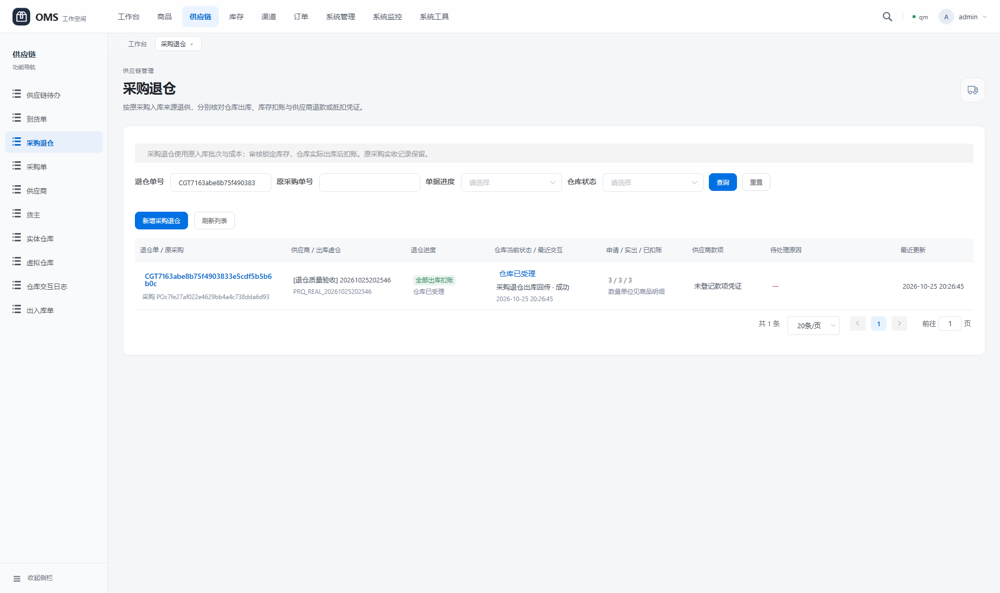
退仓商品与原采购来源查看原图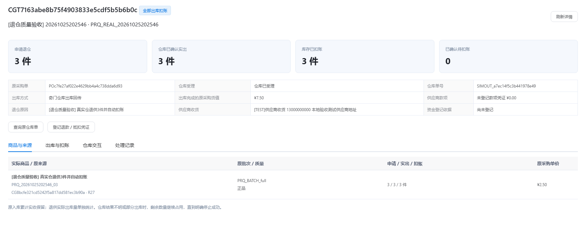
实出事件、实际物流与库存来源余额查看原图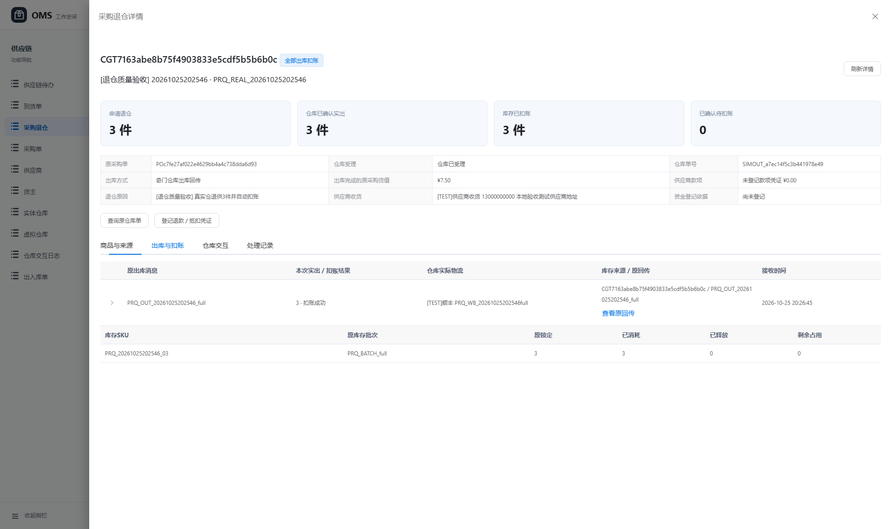
奇门CGTH原回传查看原图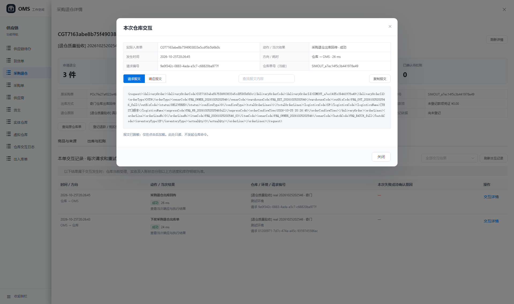
部分出库与剩余占用查看原图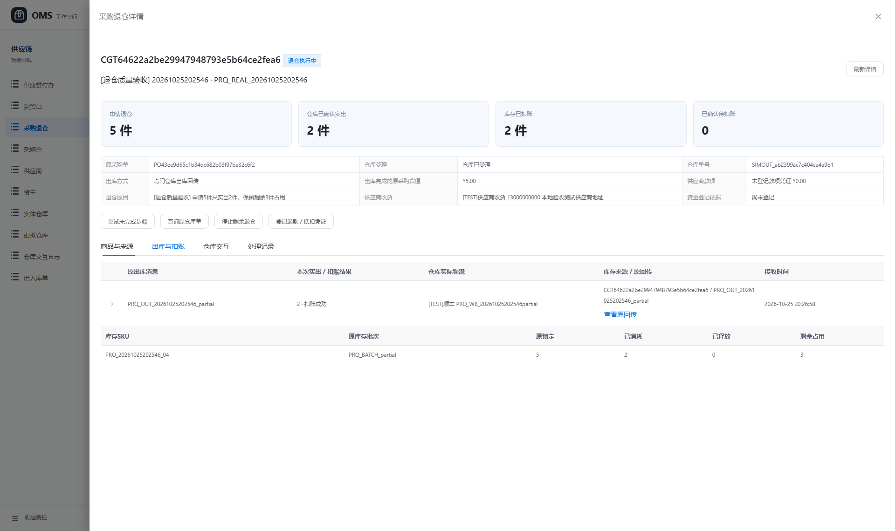
同SKU同批次正次品分行查看原图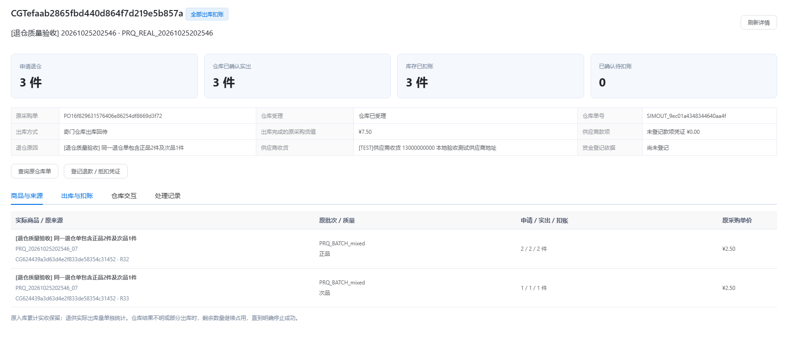
超量回传保留待核对查看原图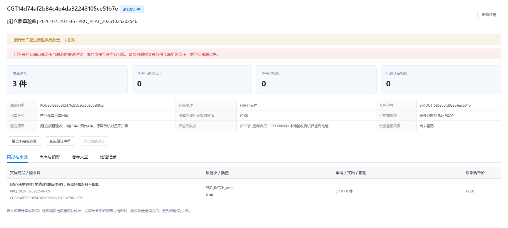
原采购实收、已退及净入库查看原图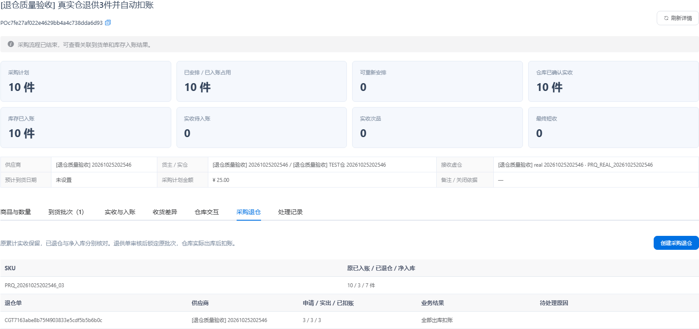
质量冻结原来源查看原图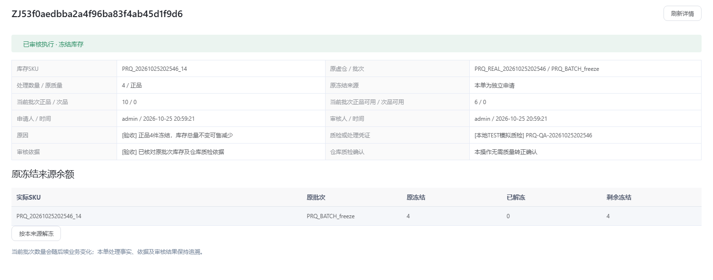
仓库质检依据与次品转正查看原图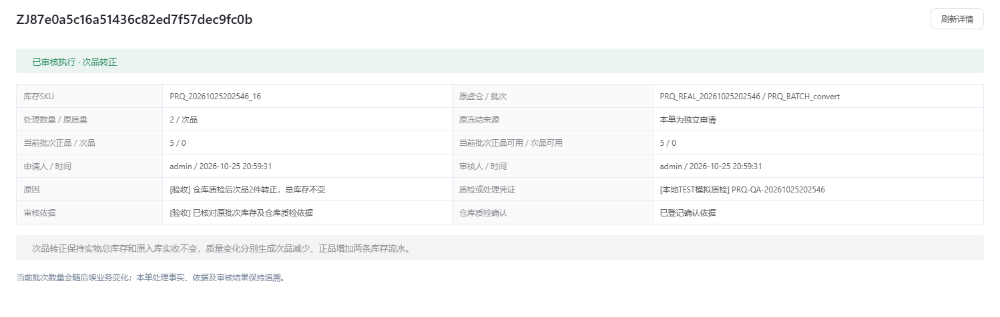
从实际库存批次申请质量处理查看原图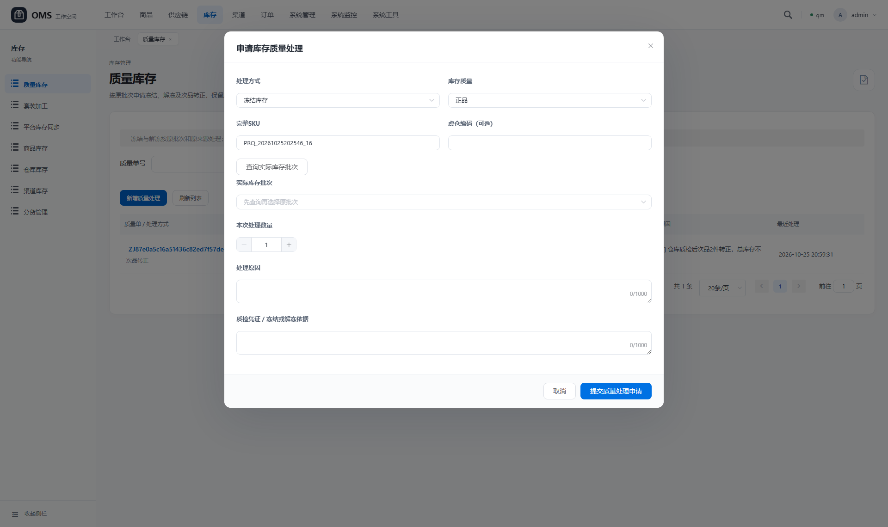